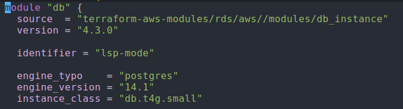
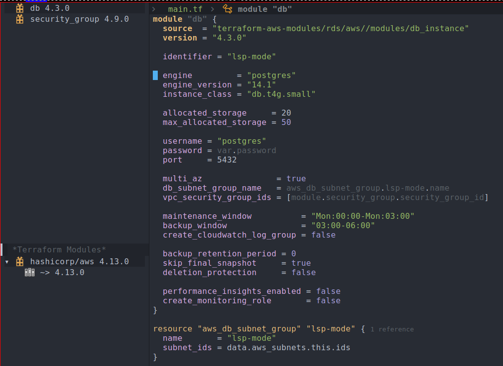

Improvements to Terraform support for lsp-mode
September 4, 2022I have been working on improving the Terraform language support for lsp-mode, that is, lsp-terraform. My goal is to ensure feature parity with the official Visual Studio extension.
Currently, there are two language servers available for Terraform:
All of my improvements were done targeting terraform-ls server which is the official language server from HashiCorp. The above links contain information about both the language servers and how they differ from each other.
New commands for validate and init operations
Two new commands were implemented for easily running validate and init operations:
- lsp-terraform-ls-validate
- lsp-terraform-ls-init
lsp-terraform-ls-validate
lsp-terraform-ls-validate runs the validate subcommand on project root. All the violations detected are published back to the buffer:

lsp-terraform-ls-init
lsp-terraform-ls-init runs the init subcommand on the project root. Note that if your Terraform project requires credentials, then you have to make sure that they are properly propagated. I have been using Steve Purcell’s envrc package for this, and it has been working well for me. Note that this is a synchronous operation and init takes quite a bit of time to complete. If your Terraform project has a lot of dependencies, then it’s probably not a good idea to use this.
This is the pull request which adds support for the above commands.
Support for References using Code Lens
This is a feature which has greatly improved my productivity. It’s best to demonstrate this feature using the following GIF:

Note that this is an experimental feature and should be enabled via the option lsp-terraform-ls-enable-show-reference.
This is the pull request which adds support for reference counts.
Semantic tokens support
Using semantic tokens, you get additional contextual information for your source code. Usually the syntax highlighting for your code is done via major mode, and they are typically implemented via regular expressions. While it’s good for immediate instant feedback, using semantic token additionally is nice as it gives you a good contextual highlighting. This snapshot is before enabling semantic token:

And this is the same piece of code with semantic token:

One way to verify that your code is actually using semantic token is to go to a piece of code and do C-u M-x what-cursor-position. It will give you lots of detail but checking its face will ensure that it’s using one defined by the lsp-semantic-tokens:
There are text properties here:
face lsp-face-semhl-label
fontified tThis is the pull request for semantic tokens. I found implementing this more involved as I had to touch both lsp-mode.el and semantic-tokens.el. Most of my other changes just involved extending the client code, but this involved understanding how various pieces fit together.
There is also this recent work by Sebastian which will lead to improvement in the way semantic tokens code is initialized by the client. I’m looking forward to doing the relevant changes for the terraform client once it’s merged.
Tree view controls
I have introduced a couple of functions that will allow you to visualize providers and module calls. I used lsp-treemacs to provide the integration. This is how your Emacs frame will look with them:

To call the above widgets you have to use the following functions:
- lsp-terraform-ls-providers
- lsp-terraform-ls-module-calls
Corresponding pull requests for the same:
Improved documentation
Also, as part of the changes, I have written a separate user manual on how to use lsp-mode effectively with Terraform. This is the official documentation page.
These are some documentation related pull requests:
- Initial documentation
- Revamp entire documentation for the terraform client
- Update documentation for terraform-ls server
Future improvements
While I’m happy with current state of Terraform client in lsp-mode and believe it’s on-par with the Visual Studio Code experience, these are some of the tasks which I’m planning to work on next:
- Tweak the semantic token faces for better contextual display.
- Better icon for treemacs widgets.
- Ability to refresh treemacs widgets.
- Test suite for Terraform client.
Also, I have been following the releases of terraform-ls and working on keeping the Terraform client compatible with the latest version like this pull request for v0.29.0. But most of the time it worked out of the box and I didn’t have to make any explicit changes.
That concludes my post on the various improvements made to the Terraform client. Do try out the latest version! Open an issue if you encounter any bugs or have suggestions for enhancements.